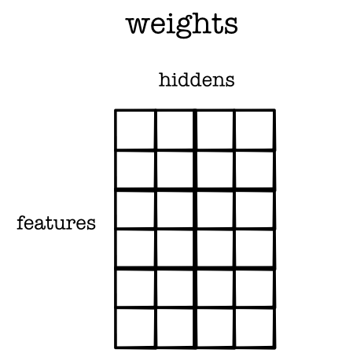
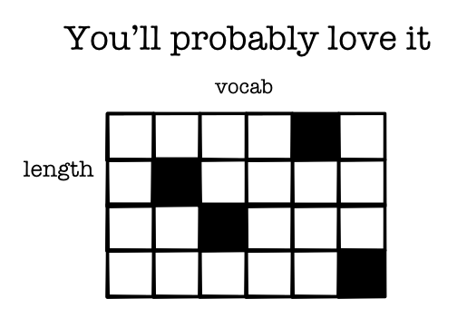

Machine Learning Engineering
Morning Session
Module-2
Module-2 is hard
Extension to Wednesday, Oct 21
Autograder Issues
Issues on github's side
Should all be resolved at this point.
Requests
Please post your repo
Please post stack trace
If you edited other functions, please let us know
Questions Task 2.1
count
Indexing with strides
Permute
Questions Task 2.2
reduce
Returning Tensors
Strides in map
Questions Task 2.3
Backward
Allows broadcasting
Questions Task 2.4
Backward
Allows broadcasting
Questions Task 2.5
Batching operations
Check grad
Lecture
Lecture 14
Applying Tensors
Today's Class
Review: Broadcasting
Training
Simple NLP
Broadcasting
Zip With Broadcasting

Zip With Broadcasting
Code
out = zeros(3, 2)
for i in range(3):
for j in range(2):
out[i, j] = a[i] + b[j]Matrix Scalar Addition
Doesn't Work!
matrix1.view(4, 3) + tensor([1, 2, 3, 5])Does Work!
matrix1.view(4, 3) + tensor([1, 2, 3, 5]).view(4, 1)Applying the Rules
(3, 4, 5) | (3, 1, 5) => (3, 4, 5)
(3, 4, 1) | (3, 1, 5) => (3, 4, 5)
(3, 4, 1) | (1, 5) => (3, 4, 5)
(3, 4, 1) | (3, 5) => X
Tensor-Scalar operations

Matrix-matrix operations

Lecture Quiz
Training
Parameter Fitting
Compute the loss function, \(L(w_1, w_2, b)\)
See how small changes would change the loss
Update to parameters to locally reduce the loss
Batching

Loss
Compute Loss
out = model.forward(X).view(data.N) loss = -((out * y) + (out - 1.0) * (y - 1.0)).log()
Model: Math
Model: Code
Model
class Network(minitorch.Module): def __init__(self): ... self.layer1 = Linear(2, HIDDEN) self.layer2 = Linear(HIDDEN, HIDDEN) self.layer3 = Linear(HIDDEN, 1)
Layer 1: Weight

Layer 1: Bias

Key Task
Use broadcasting to implement the linear function
Hint: Align batch x features x hidden to make it work
Layer 2: Weights
Compute Derivatives
Step 2
(loss.sum().view(1)).backward()
print(model.layer1.w_1.value.grad)Layer 1: Weight Grad
Update Parameters
Step 3
for p in model.parameters():
if p.value.grad is not None:
p.update(p.value - RATE * (p.value.grad / float(data.N)))Broadcasting
Batches
Loss Computation
Linear computation
Autodifferentiation
Gradient updates
Observations
Exactly the same function as Module-1
No loops within tensors
Simple NLP
Natural Language Processing
Systems for human language
Broad area of study with lots of challenges
Heavily uses ML, more in recent years
Sentiment Classification
Canonical sentence classification problem
Given sentence predict sentiment class
Key aspects: word polarity
Data

Data

Loss
Exactly the same as simple problem!
Training
Exactly the same as simple problem!
Model
Mostly similar to the simple problem.
Modeling Challenges
Converting words to vectors
Sentences of arbitrary length
Handling word combinations
Challenge: Vector Form

Challenge: Vector Form
Embedding Table

Embedding One

Reduction

Network